Debi lives in your menu bar and counts every byte, per Wi-Fi network and on your phone's hotspot. Set your monthly data plan and Debi warns you before it runs out.
Debi menü çubuğunda durur ve her baytı sayar: Wi-Fi ağına göre, telefon paylaşımına göre. Aylık paketini gir, bitmeden Debi seni uyarsın.
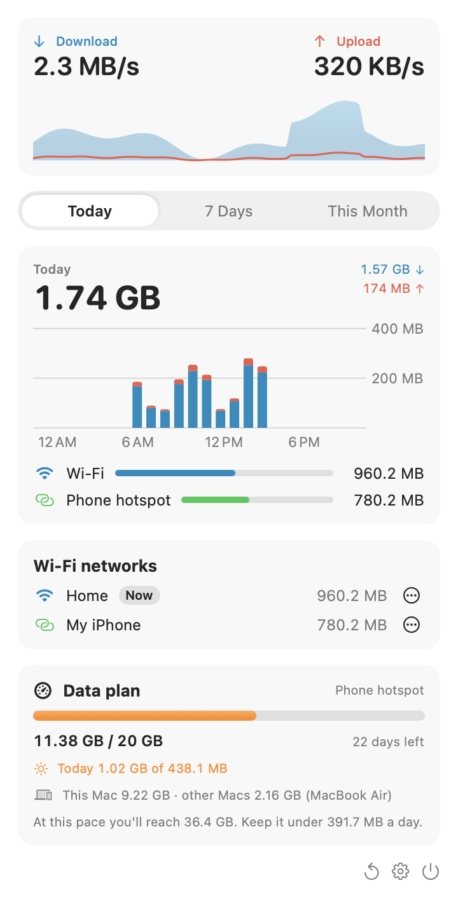
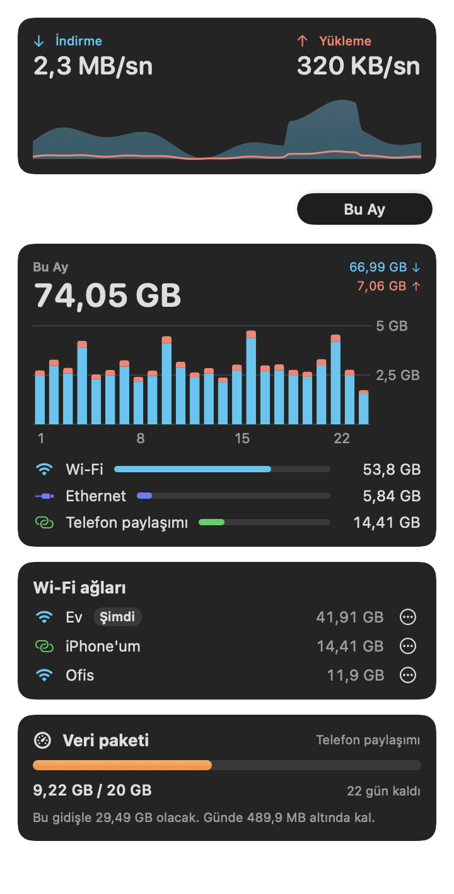
Everything you need to keep your mobile data in check, nothing you don't.
Mobil veriyi kontrol altında tutmak için gereken her şey; fazlası değil.
iPhone hotspots are detected automatically; mark any other phone with one click. On the hotspot, Debi shows whether Low Data Mode is on and opens the setting for you.
iPhone paylaşımı kendiliğinden tanınır; başka bir telefonu tek tıkla işaretle. Paylaşımdayken Debi, Düşük Veri Modu açık mı gösterir ve ayarı senin için açar.
Monthly limit, renewal day, what to count. See today's share, get a warning in time and a heads-up when something big downloads on your hotspot. Add a travel plan for trips.
Aylık limit, yenilenme günü, neyin sayılacağı. Bugünkü payını gör, zamanında uyarı al, paylaşımda büyük bir şey inerken haberin olsun. Seyahatler için ayrı paket ekle.
Two Macs on the same phone? Debi adds them up in one plan through your own iCloud.
Aynı telefona bağlı iki Mac mi var? Debi ikisini kendi iCloud'un üzerinden tek pakette toplar.
Today's usage and your plan on the desktop or in Notification Center. Ask Siri what's left, or use Debi in Shortcuts.
Bugünkü kullanım ve paketin masaüstünde ya da Bildirim Merkezi'nde. Siri'ye ne kaldığını sor ya da Debi'yi Kestirmeler'de kullan.
Download and upload speed in the menu bar, every second. Orange on your phone's hotspot, red when your plan runs low. Pick the size and weight you like.
Menü çubuğunda her saniye indirme ve yükleme hızı. Telefon paylaşımında turuncu, paket azalınca kırmızı. Boyutunu ve kalınlığını sen seç.
Today, 7 days, this month, per network, and a short summary when a month ends. Point at a bar to see its value. No account, no tracking; export as CSV anytime.
Bugün, 7 gün, bu ay, ağ ağ; ay bitince kısa bir özet. Bir çubuğun üzerine gel, değerini gör. Hesap yok, takip yok; istediğin an CSV olarak dışa aktar.
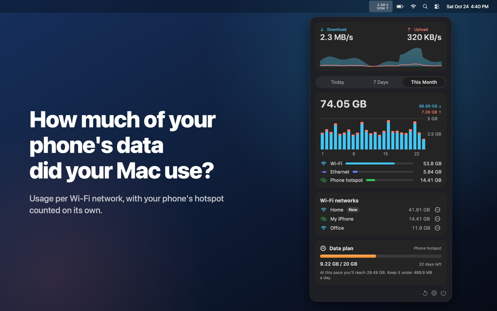
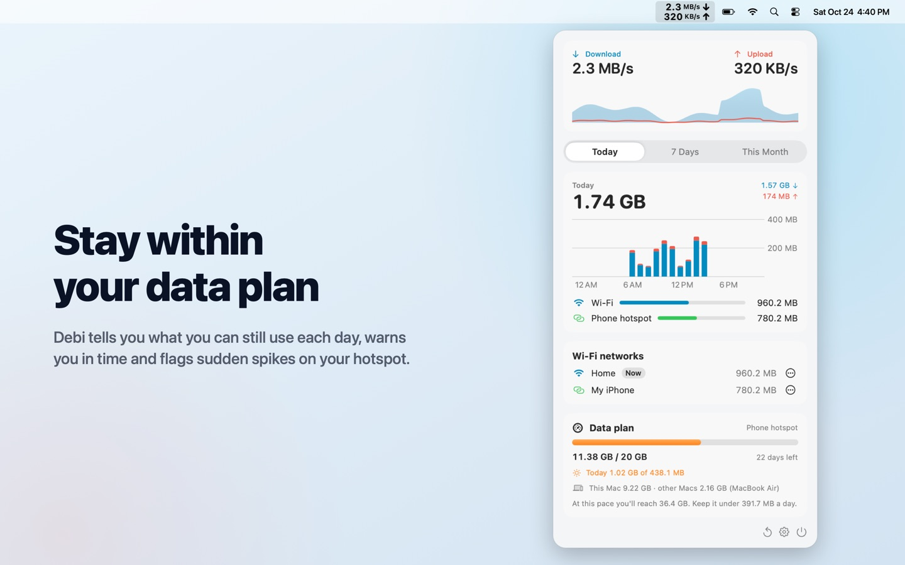
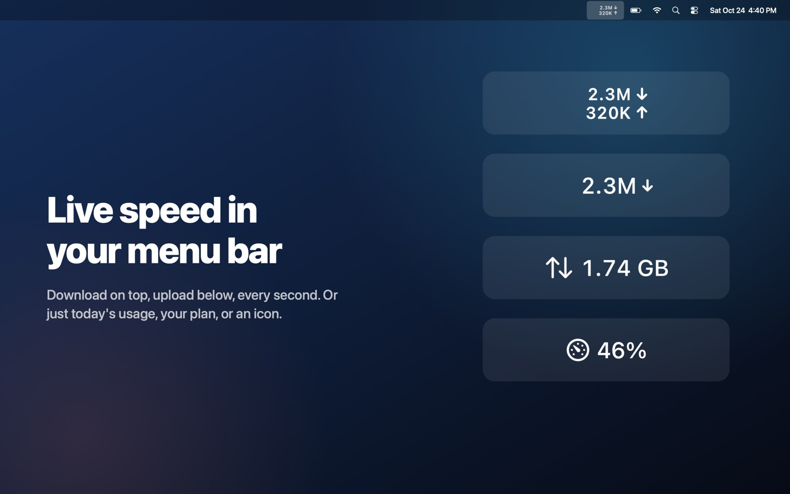
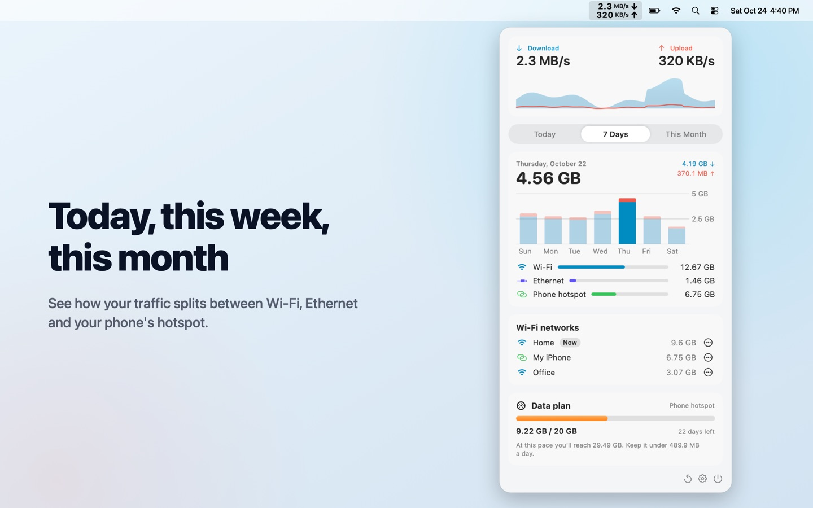
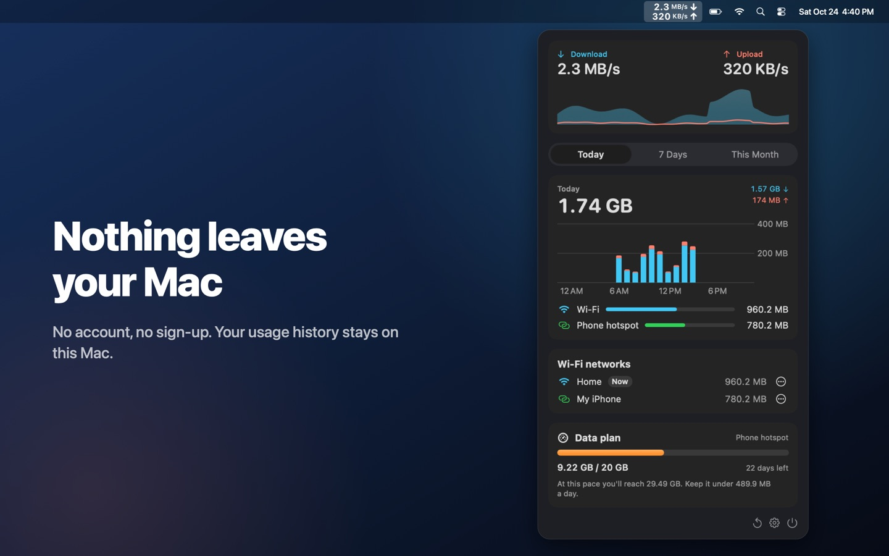
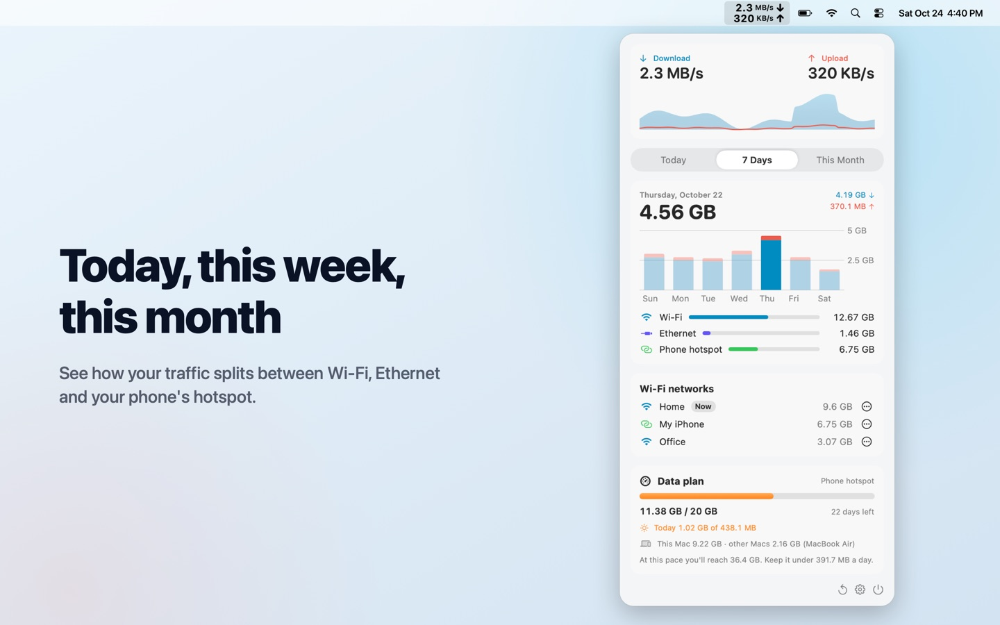
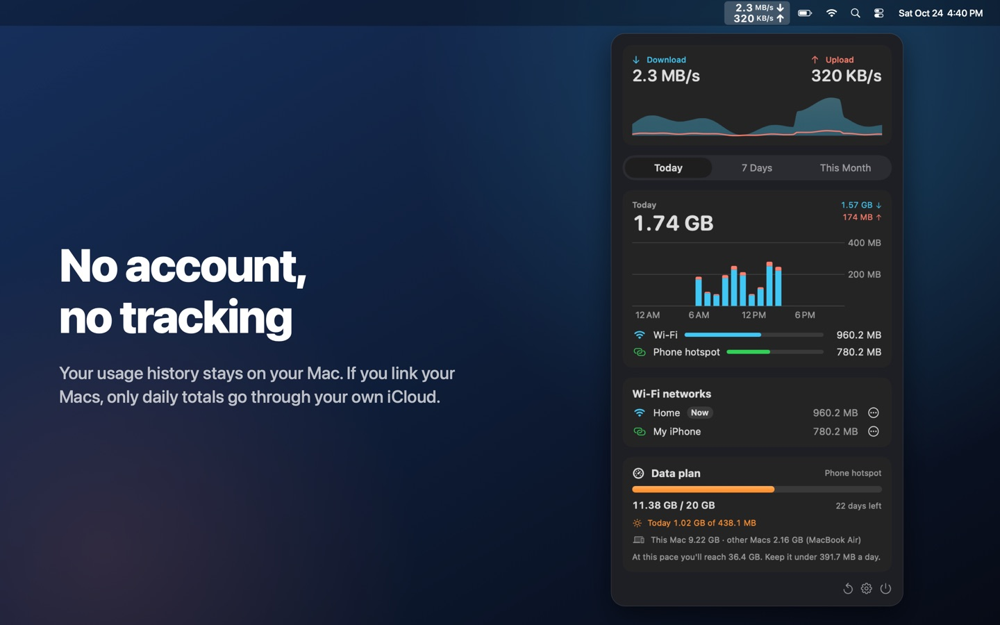
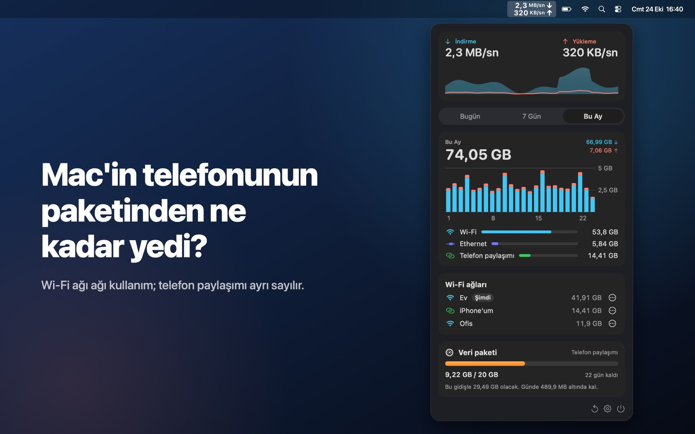
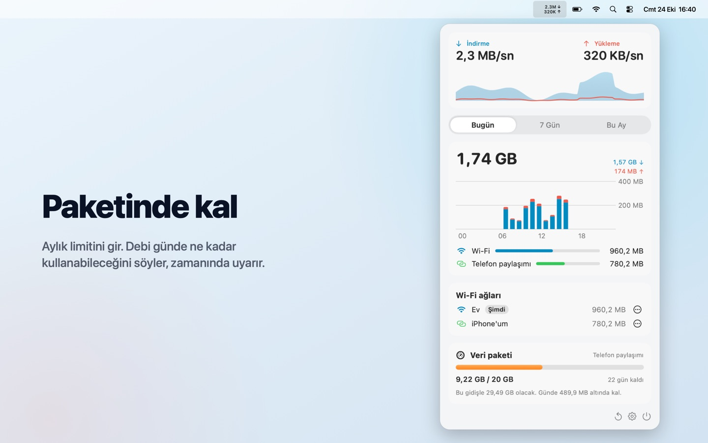
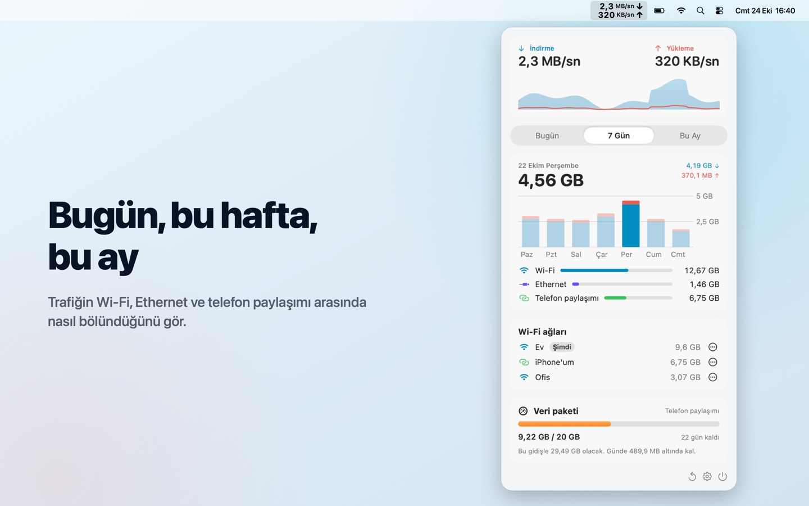
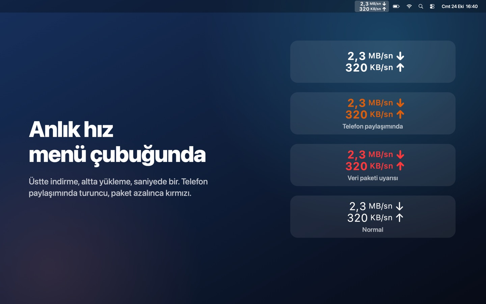
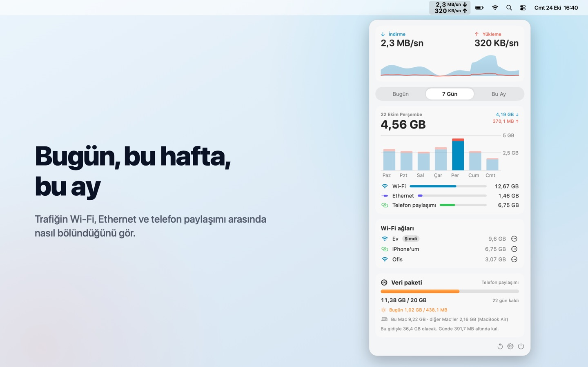
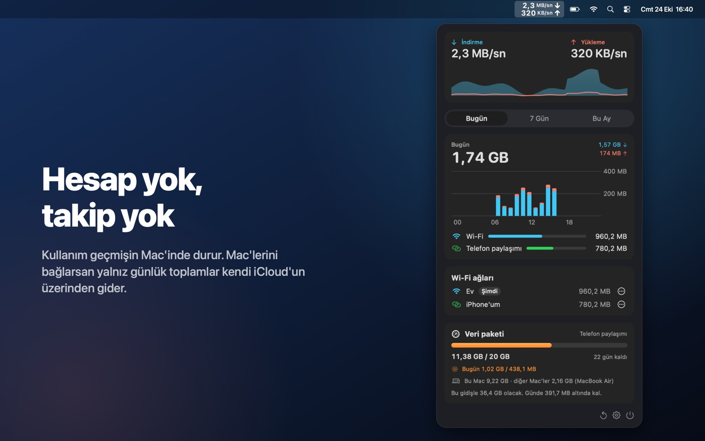
Questions or ideas? Write to info@phisoftware.com.tr, we usually answer within a day.
Sorun ya da fikir mi var? info@phisoftware.com.tr adresine yaz, genelde bir gün içinde dönüyoruz.
Debi has no Dock icon. Look for the two-line speed indicator in the menu bar and click it. On Macs with a notch, if the menu bar is full, hold ⌘ and drag Debi further right, or choose a shorter display in Settings.
Debi'nin Dock simgesi yok. Menü çubuğunda iki satırlı hız göstergesine tıkla. Çentikli Mac'lerde menü çubuğu doluysa ⌘ tuşunu basılı tutup Debi'yi sağa sürükle ya da Ayarlar'dan daha kısa bir görünüm seç.
macOS only tells apps the name of your Wi-Fi network if they have Location access. Debi uses the name to show usage per network, nothing else. Your location is never used or stored. Without the permission everything still works; networks just appear unnamed.
macOS, Wi-Fi ağının adını yalnız Konum izni olan uygulamalara söylüyor. Debi bu adı kullanımı ağa göre göstermek için kullanır, başka hiçbir şey için değil. Konumun kullanılmaz, saklanmaz. İzin vermezsen de her şey çalışır; ağlar yalnız adsız görünür.
Connect to it, open Debi, and in the Wi-Fi networks card choose "…" › "This is my phone's hotspot". All traffic on that network, past and future, is counted as hotspot.
Ona bağlan, Debi'yi aç; Wi-Fi ağları kartında "…" › "Bu benim telefonumun paylaşımı"nı seç. O ağdaki geçmiş ve gelecek bütün trafik telefon paylaşımı sayılır.
Free: live speed in the menu bar, today and the last 7 days, Wi-Fi networks, automatic iPhone hotspot detection, the Today widget, Siri and the monthly summary. Debi Pro is a one-time purchase with no subscription and adds data plans with warnings, daily share and spike alerts, travel plans, usage from your other Macs, the plan widget, this month's history, marking any phone as your hotspot (with menu bar colors) and CSV export. It works on all your Macs with the same Apple Account and with Family Sharing.
Ücretsiz: menü çubuğunda anlık hız, bugün ve son 7 gün, Wi-Fi ağları, iPhone paylaşımını otomatik tanıma, Bugün widget'ı, Siri ve aylık özet. Debi Pro tek seferlik bir satın alma, abonelik yok; uyarılı veri paketleri, günlük pay ve ani kullanım uyarıları, seyahat paketleri, diğer Mac'lerin kullanımı, paket widget'ı, bu ayın geçmişi, herhangi bir telefonu paylaşım olarak işaretleme (menü çubuğu renkleriyle) ve CSV dışa aktarma ekler. Aynı Apple Hesabı'ndaki bütün Mac'lerinde ve Aile Paylaşımı'nda geçerlidir.
Install Debi on both Macs, signed in to the same iCloud account. In the plan's settings, turn on "Include my other Macs" on each Mac. Every few minutes each Mac saves its daily totals to your iCloud, and the plan card shows this Mac and the others separately. Nothing goes to us.
Debi'yi aynı iCloud hesabıyla oturum açılmış iki Mac'e de kur. Paketin ayarlarında iki Mac'te de "Diğer Mac'lerimi de say"ı aç. Her Mac birkaç dakikada bir günlük toplamını iCloud'una yazar; paket kartı bu Mac'i ve diğerlerini ayrı gösterir. Bize hiçbir şey gelmez.
Very closely, but not to the byte: carriers count at their end and may round per session. Debi counts only your Mac, so other devices on the same hotspot use data too.
Çok yakın tutar ama bayt bayt değil: operatör kendi tarafında sayar, oturum başına yuvarlayabilir. Debi yalnız Mac'ini sayar; aynı paylaşımdaki başka cihazlar da veri harcar.